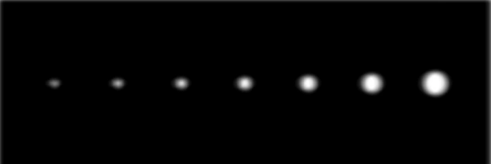
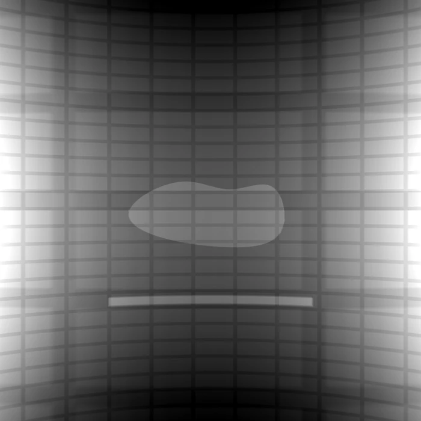
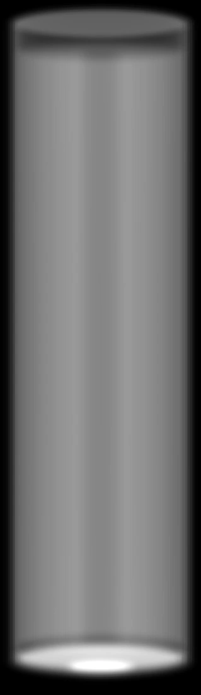
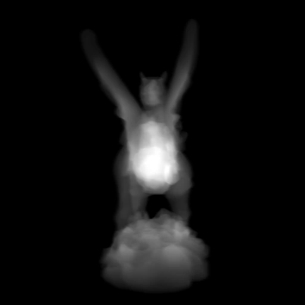

材料与多能谱
导入 NIST XCOM 衰减表，配置材料密度和入射能谱。按材料与厚度计算滤波后的光谱，并应用到配置。
Computed, not illustrated
以下图像来自现有 X-Ray Forge 仿真输出，仅做灰度窗宽与网页尺寸处理。像质计用于观察细节响应，工程模型用于检查投影与几何。
01 / POINT-SOURCE REFERENCE

02 / MEASURED FOCAL-SPOT INPUT

IMAGE QUALITY INDICATOR
3 mm 铁板 · 七个贯通圆孔 · 孔径 0.8–3.2 mm。对照点源与实测 TIFF 焦斑输入，观察小孔对比度和边缘响应。

CT ACQUISITION
结合扫描轨迹与探测器几何，输出 CT 前向投影，用于后续重构流程和采集参数研究。

MULTI-MATERIAL / 18650
理想化多材料电池模型的仿真投影。材料、壳体和内部几何共同影响衰减与图像响应。
图像是仿真示例，不是实验扫描或产品检测结论。显示窗宽按示例单独设置；像质计与焦斑对照用于定性展示，具体研究以原始数据和配置为准。
Explore the focal spot
直接拖动图片上的圆形滑块，比较同一 STL 模型的点源参考与矩形焦斑投影。几何放大与有限焦斑共同影响轮廓和细节。


拖动图片上的滑块，也可用键盘左右键调整。SOD 200 / SDD 800 mm；矩形焦斑使用 19 个有效 sourcelet。两图使用同一线积分显示窗，不改变原始模拟数据。
One research workspace
从基础正投影到 Pro 焦斑研究，在同一桌面工作台中配置、预览、计算与导出。
导入 NIST XCOM 衰减表，配置材料密度和入射能谱。按材料与厚度计算滤波后的光谱，并应用到配置。
配置 SOD、SDD、探测器和物体姿态；基于有限射线路径与能谱吸收计算单视图、多视图及 CT 前向投影。
配置探测器像素、响应及噪声，生成平场和暗场数据，配合校正与像质计观察图像变化。
导入 TIFF 焦斑，调整尺寸、旋转、平移与翻转，分析 H/V Profile、FWHM、5% 宽度和源平面 MTF。
配置准直管几何和铅、钢、钨材料，计算出口透射及等效源焦斑，将研究结果应用到仿真配置。
保留配置、图像与分析结果，支持源模型对照。用于成像参数探索、工程验证和研究流程开发。
展示内容为前向成像与源模型研究。准直分析采用射线吸收模型，不含散射与二次粒子；CT 重构可结合独立后续流程。
Research collaboration / Software access
安装包采用邮件申请。说明使用用途和所需版本，即可联系作者获取软件与授权；基础版用于基础仿真，Pro 包含基础版及研究插件。